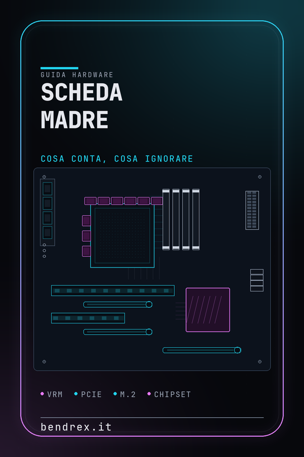

Home › Build PC › Scheda madre
Blog · HardwareScheda madre: cosa conta davvero e cosa si può ignorare

· Redazione BENDREX
In breve
- Il VRM non si misura dal numero di fasi: contano gli ampere dello stadio e il metallo del dissipatore.
- Da PCIe 5.0 a 4.0 sullo slot grafico si perde circa l'1%, ma uno slot lungo cablato x4 costa fino all'11%.
- Il nome del chipset non dice la generazione dello slot: va letta la scheda tecnica.
Come scegliere la scheda madre, in pratica, vuol dire guardare quattro cose e ignorarne altre dieci. Le quattro sono VRM, generazione e cablaggio degli slot, alloggi M.2 con le loro condivisioni e linee del chipset. Sigle, lucine e Wi-Fi 7 su un PC cablato vengono dopo.
VRM e fasi: quante ne servono davvero
Il VRM porta i 12 V dell'alimentatore a 1,0-1,3 V per la CPU. A 1,2 V e 200 W passano circa 167 A: è un convertitore di corrente, e il numero che conta è quanti ampere può attraversarlo, non quante fasi dice la sigla.
Una fase è un induttore più uno stadio di potenza, e il limite lo dà lo stadio. La ASUS TUF Gaming B850-Pro monta 14+2+1 fasi con stadi Vishay SiC629 da 80 A; la ASRock B860 Challenger, circa 130 dollari, monta 10+1+1+1 con stadi SiC623 da 60 A. Un «6+2» con stadi da 50-60 A arriva a 300-360 A teorici sul core: più del doppio dei circa 100 A di un Ryzen 7 9800X3D, che ha 120 W di TDP.
I test lo confermano. Un Ryzen 9 9950X da 170 W, con picchi a 230, su una scheda 14+2+1 da 80 A ha tenuto il VRM sotto i 70 °C tranne un sensore, dopo venti minuti di carico pieno e poco flusso d'aria. Un Core Ultra 9 285K da 250 W, su quella scheda da 130 dollari, è rimasto sotto i 75 °C dopo mezz'ora. Una CPU da gioco tra 65 e 120 W non mette in crisi un 6+2 da 50 A: il 12+2+2 serve ai 16 core, all'overclock e ai render lunghi.
Il dissipatore del VRM conta più della fase in più: nella recensione ASUS quelli con poco metallo si saturano in fretta con un 16 core a pieno carico. E due «12+2+2» possono avere dodici stadi reali oppure sei fasi raddoppiate. Nessuna fonte normalizza questi nomi, quindi contano il modello dello stadio e la superficie dissipata.
Un solo EPS da 8 pin basta per CPU tra 120 e 250 W; il secondo, come sulla MSI X870E GAMING PLUS, serve a ripartire il carico e per overclock.
PCIe e M.2: cosa controllare nella scheda
PCIe 4.0 x16 dà 31,5 GB/s, PCIe 5.0 x16 dà 63,0 GB/s, PCIe 4.0 x4 scende a 7,9 GB/s. TechPowerUp ha misurato la RTX 5090, cioè il caso peggiore, su un Ryzen 7 9800X3D: da 5.0 a 4.0 x16 si perde circa l'1% a 1080p, 1440p e 4K; a x8 il 4% a 1080p e 1440p e il 2% a 4K; su uno slot x16 cablato x4 l'11% a 1080p, il 10% a 1440p e il 6% a 4K. Con il ray tracing, a 4.0 x16 o a 5.0 x8, non si perde nulla.
Quindi PCIe 5.0 per la scheda video non giustifica un prezzo più alto. Il pericolo è il cablaggio: la MSI X870E GAMING PLUS ha uno slot lungo x16 collegato a x4 dal chipset, e metterci la GPU costa fino all'11% a 1080p.
Per gli M.2 la domanda è chi perde le linee. Sulla ASUS TUF GAMING B650-PLUS il primo M.2 è Gen5 x4 dalla CPU, il secondo Gen4 x4 dalla CPU, il terzo Gen4 x4 dal chipset: proprio il terzo spegne PCIEX16_2 quando è occupato. Sulla MSI X870E i tre M.2 sono indipendenti. Su LGA1851 la CPU dà 20 linee Gen5, sedici per la GPU e quattro per un M.2, più quattro Gen4, quindi un SSD Gen5 non toglie linee alla scheda video; su LGA1700 si trovavano M.2 Gen5 ricavati portando lo slot grafico a x8.
Resta il calore. Nel test della TUF B850-Pro un SSD Gen4 sta lontano dal throttling, mentre un Gen5 double-sided ci finisce dopo una trentina di secondi anche con il dissipatore della scheda, perché il lato inferiore resta scoperto: servono un SSD single-sided o un dissipatore di terze parti. Il dissipatore M.2 incluso è quindi un criterio di scelta, e questa è una deduzione dai test.
B650 o B850? Cosa cambia davvero tra i chipset
La tabella AMD per AM5, linee totali e di cui Gen5: X870E 44/24, X870 36/24, B850 36/4, B840 34/0, A620 e A620A 32/0. La CPU porta 24 linee Gen5 utilizzabili: sedici per la GPU, quattro per un M.2 e quattro verso il chipset. Il chipset aggiunge linee per gli altri slot e per gli M.2 secondari, e decide USB4. Quale scheda madre scegliere tra B650 e B850 è quindi una domanda su linee e porte, non sulle prestazioni in gioco.
Nella tabella AMD la grafica di B850 è indicata come PCIe 4.0, ma la generazione dello slot si legge nella scheda della scheda madre. La ASUS TUF B850-Pro dichiara uno slot x16 PCIe 5.0; la TUF B650-PLUS dichiara x16 PCIe 4.0. Regola pratica: aprire la riga «Expansion slots» della scheda scelta.
Su Intel la differenza si chiama DMI, la banda verso il chipset: Z890 ha DMI x8 e 24 linee PCIe 4.0, B860 ha DMI x4, 7,9 GB/s, e 14 linee. Con molti dispositivi collegati la differenza si può sentire, in gioco no. A620, infine, non abilita l'overclock della CPU: il suo limite vero è quello, non il numero di fasi.
Nota su date e prezzi. Prezzi rilevati il 23 novembre 2026 su Amazon.it, IVA inclusa, disponibilità variabile. È un'istantanea di una settimana di Black Friday, non un listino: entry AM5 con A620M a 70,92 €, B650 a 123,99 €, B860M a 123,73 €, B850 tra 169,99 e 205,80 €, X870E a 209,99 €. Servono a capire quanto separa le fasce, non a scegliere un modello.
Domande frequenti
- Quante fasi servono per una CPU da gioco?
Un 6+2 con stadi da 50-60 A basta per CPU tra 65 e 120 W: contano modello dello stadio e dissipatore, non il numero davanti al più.
- Serve PCIe 5.0 per la scheda video?
No. Da 5.0 x16 a 4.0 x16 si perde circa l'1% anche sulla GPU più veloce. Conta invece che lo slot sia davvero cablato x16.
- Tra B650 e B850 cosa cambia in gioco?
Nulla, se lo slot grafico e gli M.2 sono quelli che servono. Cambiano linee del chipset, USB4 e quante periferiche regge.
- Una scheda madre economica può danneggiare la CPU?
Non risulta: una scheda da 130 dollari con dieci stadi da 60 A ha tenuto un 250 W sotto i 75 °C. Il rischio reale è il throttling con carichi lunghi e poca aria nel case.
Fonti